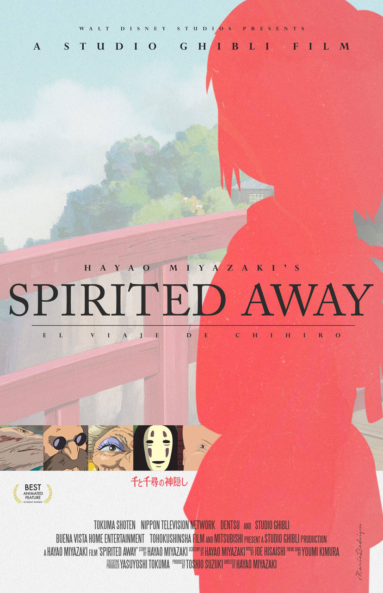
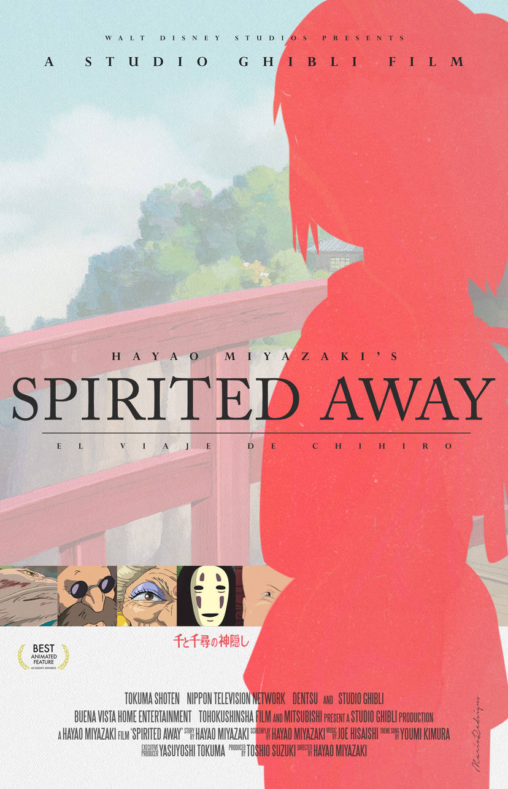

Movie Posters
 

These are some of Hayao Miyazaki's most iconic films dating back from when "My Neighbor Totoro" (left) up until being the release date for "The Boy and The Heron" (right).
Credits (left to right)
- https://www.deviantart.com/marioredsigns/art/My-Neighbor-Totoro-alternative-movie-poster-600651615
- https://www.deviantart.com/marioredsigns/art/Princess-Mononoke-alternative-movie-poster-600652712
- https://www.deviantart.com/marioredsigns/art/Spirited-Away-alternative-movie-poster-692253366
- https://www.deviantart.com/toukmeasaw/art/The-Boy-and-the-Heron-Khmer-Poster-E-989610320